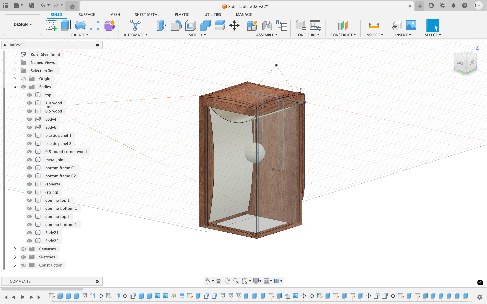

01. CAD Drawing & Prototyping

The design initially includes two more acrylic panels, which would being held with
two wooden frames, and an extra sphere light. However, as the project going on, I found that the design is
including too many elements so I decided to simplify it to keep the design clean and minimalistic.

02. Production Planning & Material Purchase
Develop a fabrication plan and purchase the necessary materials.
03. (WIP) Fabrication
Begin the crafting process by transferring cutting plan to the wood.
04. Cut Joinery
Cutting dado joints and rabbet joints with table saw and hand router.
05. Add Structure
Add wood sticks and acrylic panel to enhance the structure.
06. Table Top
Cut the joinery slots for side panels by dropping the table top on table saw and clean it with mini chisel.
07. Assembly
Assemble all components and add the metal sheet.